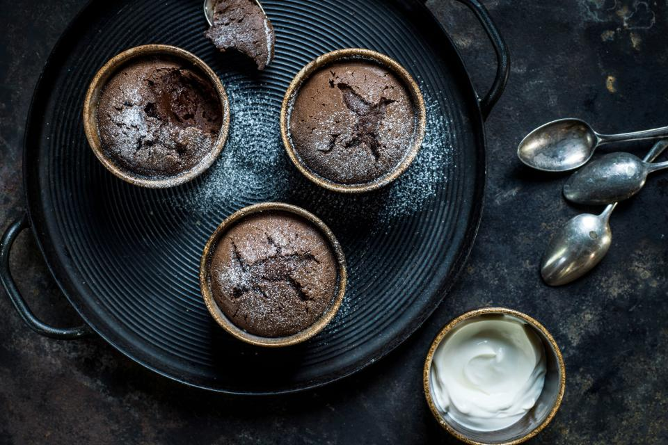

Warm choco cupcakes

Description
Experience pure comfort in every bite with these warm chocolate cupcakes.
Moist and rich, they're perfect for cozy evenings or any celebration.
Simply dusted with sugar, they're an irresistible treat that will satisfy
your chocolate cravings and warm your soul.
Ingredients
- 1 egg
- 1 egg yolk
- 60g sugar
- 1 pinch salt
- 50g dark chocolate (64% cocoa), cut into pieces
- 50g butter
- white flour
- some icing sugar
Steps
-
Mix the egg, egg yolk, sugar and salt in a bowl with a hand mixer until
the mixture turns lighter in colour.
-
Melt the chocolate and butter in a thin-sided bowl over a gently boiling
bain-marie stirring until smooth.
- Add to the egg mixture.
- Fold the flour into the mix and pour into the prepared cups.
-
Place the cups on an oven tray and bake for approx. 18 mins. in the
centre of an oven preheated to 180°C.
- Remove, dust with icing sugar, and serve immediately.
Good to know
Prepare the chocolate cup cakes approx. half a day in advance, ready for
baking, cover and keep in the fridge. The baking time will then be approx.
7 minutes longer.